토목산업기사 (2018-09-15 기출문제)
1과목: 응용역학
1. 가로방향의 변형률이 0.0022이고, 세로방향이 변형률이 0.0083인 재료의 프와송 수는?
- 2.8
- 3.2
- 3.8
- 4.2
(정답률: 77%)

2. 아래 그림과 같은 내민보에서 지점 A의 수직 반력은 얼마인가?
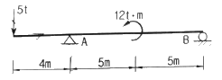
- 3.2t(↑)
- 5.0t(↑)
- 5.8t(↑)
- 8.2t(↑)
(정답률: 58%)
3. 그림과 같은 구조물에서 부재 AC가 받는 힘의 크기는?
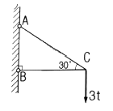
- 2t
- 4t
- 6t
- 8t
(정답률: 80%)
4. 그림과 같은 구조물은 몇 차 부정정 구조물인가?
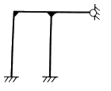
- 3차
- 4차
- 5차
- 6차
(정답률: 57%)
5. 그림과 같은 단순보에서 B점에 모멘트 하중이 작용할 때 A점과 B점의 처짐각 비(θAθB)는?
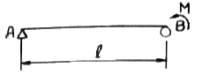
- 1 : 2
- 2 : 1
- 1 : 3
- 3 : 1
(정답률: 62%)
6. 변형에너지(strain energy)에 속하지 않는 것은?
- 외력의 일 (external work)
- 축방향 내력의 일
- 휨모멘트 에 의한 내력의 일
- 전단력에 의한 내력의 일
(정답률: 79%)
7. 아래 그림과 같은 보에서 C점에서의 휨모멘트는?
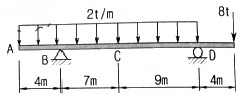
- 16 t·m
- 20 t·m
- 32 t·m
- 40 t·m
(정답률: 42%)
8. 다음 그림과 같은 3-hinge 아치에 등분포 하중이 작용하고 있다. A점의 수평 반력은?
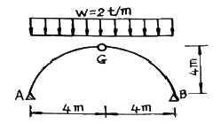
- 3t
- 4t
- 5t
- 6t
(정답률: 70%)
9. 다음 중 부정정보의 해석방법은?
- 변위일치법
- 모멘트 면적법
- 탄성하중법
- 공액보법
(정답률: 39%)
10. 반지름 r인 원형 단면에서 도심축에 대한 단면 2차 모멘트는?
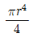
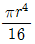
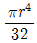
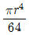
(정답률: 51%)
11. 기둥(장주)의 좌굴에 대한 설명으로 틀린 것은?
- 좌굴 하중은 단면2차모멘트(I)에 비례한다.
- 좌굴하중은 기둥의 길이(ℓ)에 비례한다.
- 좌굴응력은 세장비(λ)의 제곱에 반비례한다.
- 좌굴응력은 탄성계수(E)에 비례한다.
(정답률: 51%)
12. 폭이 20cm이고 높이가 3cm인 사각형 단면의 목재보가 있다. 이 보에 작용하는 최대 휨모멘트가 1.8t⋅m일 때 최대 휨응력은?
- 30kg/cm2
- 40kg/cm2
- 50kg/cm2
- 60kg/cm2
(정답률: 60%)
13. 지름이 D인 원형단면의 단주에서 핵(core)의 면적으로 옳은 것은?
- πD2 / 4
- πD2 / 16
- πD2 / 32
- πD2 / 64
(정답률: 47%)
14. 아래 그림과 같이 지름 1cm인 강철봉에 10t의 물체를 매달면 강철봉의 길이 변화량은? (단, 강철봉의 탄성계수 E=2.1×106kg/cm2)
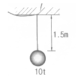
- 0.74cm
- 0.91cm
- 1.07cm
- 1.18cm
(정답률: 68%)
15. 다음 그림과 같이 O점에 P1, P2, P3의 3힘이 작용하고 있을 때 점 A를 중심으로 한 모멘트의 크기는?
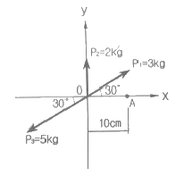
- 8kg⋅cm
- 10kg⋅cm
- 15kg⋅cm
- 18kg⋅cm
(정답률: 56%)
16. 그림과 같이 단순보에 하중 P가 경사지게 작용할 때 지점 A점에서의 수직반력은?
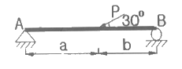
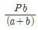
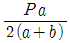
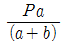
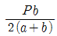
(정답률: 67%)
17. 아래 그림과 같이 단순보의 중앙에 하중 3P가 작용할 때 이 보의 최대 처짐은?
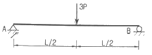
- PL3 / 4EI
- PL3 / 8EI
- PL3 / 16EI
- PL3 / 24EI
(정답률: 62%)
18. 다음 트러스에서 부재 U1의 부재력은?
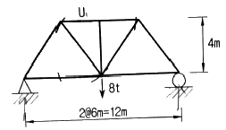
- 6t(압축)
- 6t(인장)
- 5t(압축)
- 5t(인장)
(정답률: 42%)
19. 다음 사다리꼴 도심의 위치(y0)는?
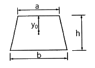
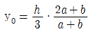
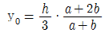
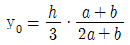
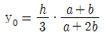
(정답률: 49%)
20. 아래 그림과 같은 단순보에 발생하는 최대 전단응력(τmax)은?
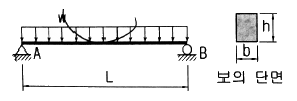
- 4wL / 9bh
- wL / 2bh
- 9wL / 16bh
- 3wL / 4bh
(정답률: 63%)
2과목: 측량학
21. 거리와 정확도 1/10000을 요구하는 100m 거리측량에서 사거리를 측정해도 수평거리로 허용되는 두 점간의 고저차 한계는?
- 0.707m
- 1.414m
- 2.121m
- 2.828m
(정답률: 50%)
22. 삼각측량에서 사용되는 대표적인 삼각망의 종류가 아닌 것은?
- 단열삼각망
- 귀심삼각망
- 사변형망
- 유심다각망
(정답률: 69%)
23. 완화곡선에 대한 설명으로 틀린 것은?
- 곡률반지름이 큰 곡선에서 작은 곡선으로의 완화구간 확보를 위하여 설치한다.
- 완화곡선에 연한 곡선 반지름의 감소율은 캔트의 증가율과 동일하다.
- 캔트를 완화곡선의 횡거에 비례하여 증가시킨 완화곡선은 클로소이트이다.
- 완화곡선의 반지름은 시점에서 무한대이고, 종점에서 원곡선의 반지름과 같아진다.
(정답률: 47%)
24. 측선 AB의 방위가 N50°E일 때 측선 BC의 방위는? (단, 내각 ABC=120°이다.)
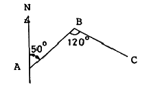
- S70°E
- N110°E
- S60°W
- E20°S
(정답률: 56%)
25. 수위표의 설치장소로 적합하지 않은 곳은?
- 상⋅하류 최소 300m 정도 곡선인 장소
- 교각이나 기타 구조물에 의한 수위변동이 없는 장소
- 홍수시 유실 또는 이동이 없는 장소
- 지천의 합류점에서 상당히 상류에 위치한 장소
(정답률: 58%)
26. 수심 H인 하천의 유속측정에서 평균유속을 구하기 위한 1점의 관측위치로 가장 적당한 수면으로부터 깊이는?
- 0.2H
- 0.4H
- 0.6H
- 0.8H
(정답률: 65%)
27. 그림과 같이 O점에서 같은 정확도로 각 x1, x2, x3 를 관측하여 x3-(x1+x2)=+45″의 결과를 얻었다면 보정값으로 옳은 것은?
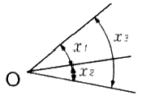
- x1 = +15″, x2 = +15″, x3 = +15″
- x1 = -15″, x2 = -15″, x3 = -15″
- x1 = +15″, x2 = +15″, x3 = -15″
- x1 = -10″, x2 = -10″, x3 = -10″
(정답률: 70%)
28. 표와 같은 횡단수준측량 성과에서 우측 12m 지점의 지반고는? (단, 측점 No.10의 지반고는 100.00m이다.)
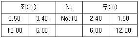
- 101.50m
- 102.40m
- 102.50m
- 103.40m
(정답률: 54%)
29. 노선측량에서 원곡선에 의한 종단곡선을 상향기울기 5%, 하향기울기 2%인 구간에 설치하고자 할 때, 원곡선의 반지름은? (단, 곡선시점에서 곡선 종점까지의 거리=30m)
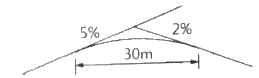
- 900.24m
- 857.14m
- 775.20m
- 428.57m
(정답률: 45%)
30. 축척 1:5000의 등경사지에 위치한 A, B점의 수평거리가 270m이고, A점의 표고가 39m, B점의 표고가 27m이었다. 35m 표고의 등고선과 A점간의 도상 거리는?
- 18mm
- 20mm
- 22mm
- 24mm
(정답률: 46%)
31. 종단면도를 이용하여 유토곡선(mass curve)을 작성하는 목적과 가장 거리가 먼 것은?
- 토량의 운반거리 산출
- 토공장비의 선정
- 토량의 배분
- 교통로 확보
(정답률: 66%)
32. 완화곡선 중 곡률이 곡선길이에 비례하는 곡선은?
- 3차 포물선
- 클로소이드(clothoid) 곡선
- 반파장 사인(sine) 체감곡선
- 렘니스케이트(lemniscate) 곡선
(정답률: 66%)
33. 각측량 시 방향각에 6″의 오차가 발생한다면 3km 떨어진 측점의 거리오차는?
- 5.6cm
- 8.7cm
- 10.8cm
- 12.6cm
(정답률: 49%)
34. 항공사진의 특수3점이 아닌 것은?
- 표정점
- 주점
- 연직점
- 등각점
(정답률: 53%)
35. 접선과 현이 이루는 각을 이용하여 곡선을 설치하는 방법으로 정확도가 비교적 높은 다곡선 설치법은?
- 현편거법
- 지거설치법
- 중앙종거법
- 편각설치법
(정답률: 56%)
36. 축척 1:5000인 도면상에서 택지개발지구의 면적을 구하였더니 34.98cm2이었다면 실제면적은?
- 1749m2
- 87450m2
- 174900m2
- 874500m2
(정답률: 48%)
37. 다음 중위성에 탑재된 센서의 종류가 아닌 것은?
- 초분광센서(Hyper Specreal Sensor)
- 다중분광센서(Multispectral Sensor)
- SAR(Synthetic Aperture Radar)
- IFOV(Instantaneous Foeld Of View)
(정답률: 55%)
38. 삼각측량에서 내각을 60°에 가깝도록 정하는 것을 원칙으로 하는 이유로 가장 타당한 것은?
- 시각적으로 보기 좋게 베열하기 위하여
- 각 점이 잘 보이도록 하기 위하여
- 측각의 오차가 변의 길에에 미치는 영향을 최소화 하기 위하여
- 선점 작업의 효율성을 위하여
(정답률: 70%)
39. 우리나라의 축척 1:50000 지형도에서 주곡선의 간격은?
- 5m
- 10m
- 20m
- 25m
(정답률: 57%)
40. 기포관의 기포를 중앙에 있게 하여 100m 떨어져 있는 곳의 표척 높이를 읽고 기포를 중앙에서 5눈금 이동하여 표척의 눈금을 읽은 결과 그 차가 0.⑤m 이었다면 감도는?
- 19.6″
- 20.6″
- 21.6″
- 22.6″
(정답률: 41%)
3과목: 수리학
41. 개수로의 특성에 대한 설명으로 옳지 않은 것은?
- 배수곡선은 완경사 흐름의 하천에서 장애물에 의해 발생한다.
- 상류에서 사류로 바뀔 때 한계수심이 생기는 단면을 지배단면이라 한다.
- 사류에서 상류로 바뀌어도 흐름의 에너지선은 변하지 않는다.
- 한계수심으로 흐를 때의 경사를 한계경사라 한다.
(정답률: 68%)
42. 폭이 b인 직사각형 위어에서 양단수축이 생길 경우 유효폭 b2는?
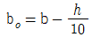
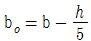
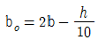
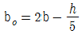
(정답률: 44%)
43. 수심이 3m, 폭이 2m인 직사각형 수로를 연칙으로 가로 막을 때 연직판에 착용하는 전수압의 작용점(  )의 위치는? (단,
)의 위치는? (단,
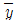
는 수면으로부터의 거리)- 2m
- 2.5m
- 3m
- 6m
(정답률: 37%)
44. 관수로에서 Darcy Weisdach 공식의 마찰손실계수 f가 0.04일 때 Chezy의 평균유속공식
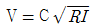
에서 C는?- 25.5
- 44.3
- 51.1
- 62.4
(정답률: 49%)
45. 과수로 내의 흐름에서 가장 큰 손실수는?
- 마찰 손실수두
- 유출 손실수두
- 유입 손실수두
- 급확대 손실수두
(정답률: 66%)
46. 다음 중 점성계수의 차원으로 옳은 것은?
- L2T-1
- ML-1T-1
- MLT-1
- ML-3ML-3
(정답률: 61%)
47. 모세관현상에 대한 설명으로 옳지 안은 것은?
- 모세관현상은 액체와 벽면 사이의 부착력과 액체분자 간 응집력의 상대적인 크기에 의해 영향을 받는다.
- 물과 같이 부착력이 응집력보다 클 경우 세관 내의 물은 물 표면보다 위로 올라간다.
- 액체와 고체 벽면이 이루는 접촉각은 액체의 종류와 관계없이 동일하다.
- 수은과 같이 응집력이 부착력보다 크면 세관 내의 수은은 수은 표면보다 아래로 내려간다.
(정답률: 63%)
48. 지하수에 대한 설명으로 옳은 것은?
- 지하수의 연직분포는 지하수위 상부층인 포화대, 지하수위 하부층인 통기대로 구분된다.
- 지표면의 물이 지하로 침투되어 투수성이 높은 암석 또는 흙에 포함되어 있는 포화상태의 물을 지하수라 한다.
- 지하수면이 대기압의 영향을 받고 자유수면을 갖는 지하수를 피압지하수라 한다.
- 상하의 불투수층 사이에 낀 대수층 내에 포함되어 있는 지하수를 비피압지하수라 한다.
(정답률: 50%)
49. 개수로의 흐름에서 상류의 조건으로 옳은 것은? (단, hc : 한계수심, Vc : 한계유속, Ic : 한계경사, h : 수심, V : 유속, I : 경사)
- Fr ＞ 1
- h ＜ hc
- V ＞ Vc
- I ＜ Ic
(정답률: 63%)
50. 정상적인 흐름 내 하나의 유선 상에서 유체 입자에 대하여 속도수두가
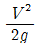
, 압력수두가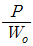
, 위치수두가 z라고 할 때 동수경사선은?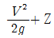
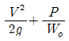
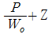
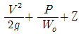
(정답률: 55%)
51. 그림과 같이 단면 ①에서 단면적 A1=10cm2, 유속 V1=2m/s이고, 단면 ②에서 단면적 A2=20cm2일 때 단면 ②의 유속(V2)과 유량(Q)은?
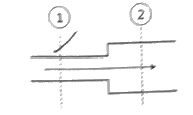
- V2=200cm/s , Q=2000cm3/s
- V2=100cm/s , Q=1500cm3/s
- V2=100cm/s , Q=2000cm3/s
- V2=200cm/s , Q=1000cm3/s
(정답률: 56%)
52. 그림과 같이 1/4원의 벽면에 접하여 유량 Q=0.⑤m3/s의 면적 200cm2으로 일정한 단면을 따라 흐를 때 벽면에 작용하는 힘은? (단, 무게 1kg=9.8N)
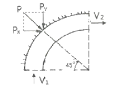
- 117.6N
- 176.4N
- 1176N
- 1764N
(정답률: 48%)
53. 오리피스에서의 실제 유속을 구하기 위하여 에너지 손실을 고려하는 방법으로 옳은 것은?
- 이론 유속에 유속계수를 곱한다.
- 이론 유속에 유량계수를 곱한다.
- 이론 유속에 수축계수를 곱한다.
- 이론 유속에 모형계수를 곱한다.
(정답률: 63%)
54. 수리학적으로 유리한 단면(best hydraulic section)에 대한 설명으로 옳은 것은?
- 동수반경이 최소가 되는 다면이다.
- 유량을 최소로 하여 주는 단면이다.
- 윤변을 최대로 하여 주는 단면이다.
- 주어진 유량에 대하여 단면적을 최소로 하는 단면이다.
(정답률: 45%)
55. 부체에 관한 설명 중 틀린 것은?
- 수면으로부터 부체의 최심부(가장 깊은 곳) 까지의 수심을 홀수라 한다.
- 경심은 물체 중심선과 부력 작용선의 교점 이다.
- 수중에 있는 물체는 그 물체가 배제한 배수량 만큼 가벼워진다.
- 수면에 떠 있는 물체의 경우 경심이 중심보다 위에 있을 때는 불안정한 상태이다.
(정답률: 50%)
56. Darcy-Weisbach 의 마찰손실계수
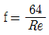
이고, 지름 0.2cm인 유리관 속을 0.8cm3/s의 물이 흐를 때 관의 길이 1.0m에 대한 손실수두는? (단, 레이놀즈수는 500이다.)- 1.1cm
- 2.1cm
- 11.3cm
- 21.2cm
(정답률: 44%)
57. 아래 식과 같이 표현되는 것은?
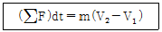
- 역적-운동량 방정식
- Bernoulll 방정식
- 연속방정식
- 공선조건식
(정답률: 56%)
58. 폭이 1.5m인 직사각형 단면 수로에 유량 Q=0.5m3/s의 물이 흐르고 있다. 수심 h=1m인 경우 이 흐름의 상태는?
- 상류
- 사류
- 한계류
- 충류
(정답률: 58%)
59. 직사각형 광폭 수로에서 한계류의 특징이 아닌 것은?
- 주어진 유량에 대해 비에너지가 최소이다.
- 주어진 비에너지에 대해 유량이 최대이다.
- 한계수심은 비에너지의 2/3 이다.
- 주어진 유량에 대해 비력이 최대이다.
(정답률: 42%)
60. 지하수의 흐름에서 Darcy 공식에 관한 설명으로 옳지 않은 것은? ( 단, dh : 수두 차, ds : 흐름의 길이)
- Darcy 공식은 물의 흐름이 층류인 경우에만 적용할 수 있다.
- 투수계수 K의 차원은 [LT-1]이다.
- 투수계수는 흙입자의 크기에만 관계된다.
- 동수경사는
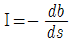
로 표현할 수 있다.
(정답률: 51%)
4과목: 철근콘크리트 및 강구조
61. 건조수축 또는 온도변화에 의하여 콘크리트에 발생하는 균열을 방지하기 위한 목적으로 배치되는 철근을 무엇이라고 하는가?
- 수축⋅온도철근
- 비틀림 철근
- 복부보강근
- 배력철근
(정답률: 59%)
62. 그림과 같은 띠철근 기둥이 받을 수 있는 설계 측강도 (øPn)는? (단, fck = 20MPa, fy = 300MPa, Ast = 4000mm이며 압축지배단면이다.)
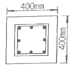
- 2655kN
- 2406kN
- 2157kN
- 2003kN
(정답률: 40%)
63. 강재의 연결 시 주의사항에 대한 설명으로 틀린 것은?
- 잔류응력이나 2차응력을 일으키지 않아야 한다.
- 각 재편에 가급적 편심이 없어야 한다.
- 여러 가지의 연결 방법을 병용하도록 한다.
- 응력집중이 없어야 한다.
(정답률: 62%)
64. 직사각형 단면의 철근콘크리트 보에 전단력과 휨만이 작용할 때 콘크리트가 받을 수 있는 설계 전단 강도(øVc)는 약 얼마인가? (단, b=300mm, d=500mm, fck=28MPa)
- 99.2kN
- 124.1kN
- 132.3kN
- 143.5kN
(정답률: 58%)
65. 아래의 표에서 설명하는 것은?
- 설계기준강도
- 배합강도
- 공칭강도
- 소요강도
(정답률: 38%)
66. 콘크리트에 초기 프리스트레스(Pt)=600kN을 도입한 후 여러 가지 원인데 의하여 100kN의 프리스트레스가 손실되었을 때의 유효율은?
- 80%
- 83%
- 86%
- 89%
(정답률: 54%)
67. 다음 중 풀 프리스트레싱 (Full prestressing)에 대한 설명으로 옳은 것은?
- 설계하중 작용 시 단면의 일부에 인장응력이 발생하도록 한 방법
- 설계하중 작용 시 단면의 어느 부위에도 인장응력이 발생하지 않도록 한 방법
- 외적으로 반력을 조절해서 프리스트레스를 도입하는 방법
- 콘크리트가 경화한 뒤어 PS 강재를 기장하는 방법
(정답률: 47%)
68. 옹벽의 안정조건에 대한 설명으로 틀린 것은?
- 활동에 대한 저항력은 옹벽에 작용하는 수평력의 1.5배 이상이어야 한다.
- 전도에 대한 저항휨모멘트는 횡토압에 의한 저도 모멘트의 2.0배 이상이어야 한다.
- 전도 및 활동에 대한 안정조건은 만족하지만, 지반 지지력에 대한 안정조건만을 만족하지 못할 경우에는 횡방향 앵커를 설치하여 지반지지력을 증대시킬 수 있다.
- 지반에 유발되는 최대 지반반력은 지반의 허용지지력을 초과할 수 없다.
(정답률: 43%)
69. 그림과 같이 400mm×12mm 의 강판을 홈 용접하려 한다. 500kN의 인장력이 작용하면 용접부에 일어나는 옹력은 얼마인가? (단, 전단면을 유효길이로 한다.)
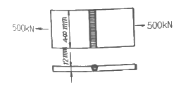
- 92.2MPa
- 98.2MPa
- 101.2MPa
- 104.2MPa
(정답률: 52%)
70. 강도감소계수(ø)의 사용 목적에 대한 설명으로 틀린 것은?
- 재료 강도와 치수가 변동할 수 있으므로 부재의 강도 저하 확률에 대비한 여유를 반영하기 위해서
- 초과하중 및 구조물의 용도변경에 따른 여유를 반영하기 위해서
- 구조물에서 차지하는 부재의 중요도 등을 반영하기 위해서
- 부정확한 설계 방정식에 대비한 여유를 반영하기 위해서
(정답률: 39%)
71. 단철근 직사각형보에 하중이 작용하여 10mm의 탄성처짐이 발생하였다. 모든 하중이 5년 이상의 장기하중으로 작용한다면 총처짐량은 얼마인가?
- 20mm
- 30mm
- 35mm
- 45mm
(정답률: 48%)
72. 철근콘크리트 구조무르이 전단철근에 대한 설명 중 틀린 것은?
- 주인장 철근에 30°이상의 각도로 구부린 굽힘철근은 전단철근으로 사용할 수 있다.
- 스터럽과 굽힘철근을 조합하여 전단철근으로 사용할 수 있다.
- 주인장 철근에 45°이상의 각도로 설치되는 스터럽은 전단철근으로 사용할 수 있다.
- 용접 이형철망을 제외한 일반적인 전단철근의 설계기준항복강도는 600MPa을 초과할 수 없다.
(정답률: 44%)
73. 아래 그림과 같은 T형보가 있다. 이 보의 등가직사각형 응력블록의 깊이(α)는?(단, fck =24MPa, fy =400MPa, As =3970mm2)
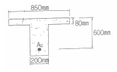
- 76.52mm
- 102.83mm
- 129.22mm
- 143.37mm
(정답률: 38%)
74. 인장이형철근의 정착길이에 대한 설명으로 틀린 것은?
- 인장이형철근의 정착길이(ld)는 기본 정착길이(lab)에 보정계수를 고려하여 구할 수 있다.
- 인장이형철근의 정착길이는 철근의 항복강도(fy)에 비례한다.
- 인장이형철근의 정착길이는 콘크리트의 설계기준 압축강도(fck)의 제곱근에 반비례한다.
- 인장이형철근의 정착길이(ld)는 항상 500mm이상이어야 한다.
(정답률: 60%)
75. 다음 중 강도설계법에서 적용되는 부재별 강도감소계수가 잘못된 것은?
- 인장지배단면 : 0.85
- 압축지배단면 중 나선철근으로 보강된 철근콘크리트 부재 : 0.70
- 무근콘크리트의 휨모멘트, 압축력, 전단력, 지압력을 받는 부재 : 0.55
- 콘크리트의 집압력을 받는 부재 : 0.80
(정답률: 56%)
76. 지름 30mm인 고력볼트를 사용하여 강판을 연결하고자 할 때 강판에 뚫어야 할 구멍의 지름은? (단, 표준적인 경우)
- 27mm
- 30mm
- 33mm
- 35mm
(정답률: 62%)
77. 아래 그림과 같은 단철근 직사각형 보에서 인장철근비(ρ)는? (단, As=2382mm2, fck=28MPa, fy=400MPa)
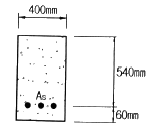
- 0.01103
- 0.00993
- 0.00821
- 0.00627
(정답률: 58%)
78. 그림과 같은 PSC보의 지간 중앙점에서 강선을 꺾었을 때 이 중앙점에서 상향력 U의 값은?
- 2Fsinθ
- 4Fsinθ
- 2Ftanθ
- 4Ftanθ
(정답률: 55%)
79. 강도설계법을 적용하기 위한 기본가정에서 압축측연단에서 콘크리트의 극한변형률은 얼마로 가정하는가?
- 0.003
- 0.004
- 0.0⑤
- 0.006
(정답률: 69%)
80. 강도설계법에서 보에 대한 등가직사각형 응력블록의 깊이 (α)는 아래 표와 같은 공식에 위해 구할 수 있다. 이때 fck=68MPa인 경우 β1의 값은?
- 0.51
- 0.57
- 0.65
- 0.71
(정답률: 54%)
5과목: 토질 및 기초
81. 저항체를 땅 속에 삽입해서 관입, 회전, 인발 등의 저항을 측정하여 토층의 상태를 탐사하는 원위치 시험을 무엇이라 하는가?
- 오거보링
- 테스트 피트
- 샘플러
- 사운딩
(정답률: 62%)
82. 읅의 전단특성에서 교란된 흙이 시간이 지남에 따라 손실된 강도의 일부를 회복하는 현상을 무엇이라 하는가?
- Dilatancy
- Thixotropy
- Sensitivity
- Liquefacyion
(정답률: 61%)
83. 다짐에 대한 설명으로 틀린 것은?
- 점토를 최적함수비보다 작은 함수비로 다지면 분산구조를 갖는다.
- 투수계수는 최적함수비 근처에서 거의 최소값을 나타낸다.
- 다짐에너지가 클수록 최대건조단위중량은 커진다.
- 다짐에너지가 클수록 최적함수비는 작아진다.
(정답률: 40%)
84. 다음 중 표준관입시험으로부터 추정하기 어려운 항목은?
- 극한지지력
- 상대밀도
- 점성토의 연경도
- 투수성
(정답률: 50%)
85. 포화 점토층의 두께가 6.0m이고 점토층 위와 아래는 모래층이다. 이 점토층이 최종 압밀 침하량의 70%를 일으키는데 걸리는 기간은? (단, 압밀계수(Cv)=3.6×10-3cm2/s이고, 압밀도 70%에 대한 시간계수 (Tv)=0.403이다.)
- 116.6일
- 342일
- 233.2일
- 466.4일
(정답률: 43%)
86. 모래 치환법에 의한 현장 흙의 단위무게 실험결과가 아래와 같다. 현장 흙의 건조단위무게는?
- 0.93g/cm3
- 1.13g/cm3
- 1.33g/cm3
- 1.53g/cm3
(정답률: 56%)
87. 안지름이 0.6mm인 유리관을 15℃의 정수 중에 세웠을 때 모관상승고(hc)는? (단, 접촉각 α는 0°, 표면장력은 0.075g/cm)
- 6cm
- 5cm
- 4cm
- 3cm
(정답률: 41%)
88. 다음 중 흙의 투수계수와 관계가 없는 것은?
- 간극비
- 흙의 비중
- 포화도
- 흙의 입도
(정답률: 63%)
89. 점토의 자연시료에 대한 일축압축 강도가 0.38MPa이고, 이 흙의 되비볐을 때의 일축압축강도가 0.22MPa이었다. 이 흙의 점착력과 예민비는 얼마인가? (단, 내부마찰각 ø=0 이다.)
- 점착력 : 0.19MPa, 예민비 : 1.73
- 점착력 : 1.9MPa, 예민비 : 1.73
- 점착력 : 0.19MPa, 예민비 : 0.58
- 점착력 : 1.9MPa, 예민비 : 0.58
(정답률: 51%)
90. 어떤 흙의 간극비(e)가 0.52 이고, 흙 속에 흐르는 물의 이론 침투속도(v)가 0.214cm/s일 때 실제의 침투유속(vs)은?
- 0.424cm/s
- 0.525cm/s
- 0.626cm/s
- 0.727cm/s
(정답률: 36%)
91. 다음 중 사면의 안정해석방법이 아닌 것은?
- 마찰원법
- Bishop의 간편법
- 응력경로법
- Fellenius 방법
(정답률: 44%)
92. 흙의 액성한계⋅소성한계 시험에 사용하는 흙 시료는 몇 mm체를 통과한 흙을 사용하는가?
- 4.75mm체
- 2.0mm체
- 0.425mm체
- 0.075mm체
(정답률: 41%)
93. 기초가 갖추어야 할 조건으로 가장 거리가 먼 것은?
- 동결, 세굴 등에 안전하도록 최소의 근입깊이를 가져야 한다.
- 기초의 시공이 가능하고 침하량이 허용치를 넘지 않아야 한다.
- 상부로부터 오는 하중을 안전하게 지지하고 기초지반에 전달하여야 한다.
- 미관상 아름답고 주변에서 쉽게 구독할 수 있고 값싼 재료로 설계되어야 한다.
(정답률: 68%)
94. 연약지반 개량공법으로 압밀의 원리를 이용한 공법이 아닌 것은?
- 프리로딩 공법
- 바이브로 플로테이션 공법
- 대기압 공법
- 페이퍼 트레인 공법
(정답률: 59%)
95. 자연함수비가 액성한계보다 큰 흙은 어떤 상태인가?
- 고체상태이다.
- 반고체 상태이다.
- 소성생태이다.
- 액체상태이다.
(정답률: 60%)
96. 다음 말뚝의 지지력 공식 중 정역학적 방법에 의한 공식은?
- Hiley 공식
- Engineering-News 공식
- Sander 공식
- Meyerhof 공식
(정답률: 46%)
97. 다음 중 순수한 모래의 전단강도(τ)를 구하는 식으로 옳은 것은? (단, c는 점착력, ø는 내부마찰각, σ는 수직응력이다.)
- τ = σ · tanø
- τ = c
- τ = c · tanø
- τ = tanø
(정답률: 57%)
98. 흙의 비중(Gs)이 2.80, 함수비(ω)가 50%인 포화토에 있어서 한계동수경사 (ic)는?
- 0.65
- 0.75
- 0.85
- 0.95
(정답률: 50%)
99. 다음의 지반개량공법 중 모래질 지반을 개량 하는데 적합한 공법은?
- 다짐모래말뚝 공법
- 페이퍼 드레인 공법
- 프리로딩 공법
- 생석회 말뚝 공법
(정답률: 51%)
100. 점착력(c)이 0.4t/m2, 내부마찰각(ø)이 30°, 흙의 단위중량(γ)이 1.6t/m3인 흙에서 인정균열이 발생하는 깊이(zo)는?
- 1.73m
- 1.28m
- 0.87m
- 0.29m
(정답률: 30%)
6과목: 상하수도공학
101. 상수도 침전지의 제거율을 향상시키기 위한 방안으로 틀린 것은?
- 침전지의 침강면적(A)을 크게 한다.
- 플목의 침강속도(V)를 크게 한다.
- 유량(Q)을 적게 한다.
- 침전지의 수심(H)을 크게 한다.
(정답률: 32%)
102. 하수처리장의 계획에 있어서 일반적으로 처리시설의 계획에 기준이 되는 것은?
- 계획1일최대오수량
- 계획1일평균오수량
- 계획시간최대오수량
- 계획시간평균오수량
(정답률: 59%)
103. 어느 하수의 최종 BOD가 250mg/L 이고 탈산소계수 K1(상용대수)값이 0.2/day라면 BOD5는?
- 225mg/L
- 210mg/L
- 190mg/L
- 180mg/L
(정답률: 52%)
104. 펌프에 대한 설명으로 틀린 것은?
- 수격현상은 주로 펌프의 급정지시 발생한다.
- 손실수두가 작을수록 실양정은 전양정과 비슷해진다.
- 비속도(비교회전도)가 클수록 같은 시간에 많은 물을 송수할 수 있다.
- 흡입구경은 토출량과 흡입구의 유속에 의해 결정된다.
(정답률: 52%)
1⑤. 응집침전에서 무기계 응집제로서 주로 사용되는 것은?
- 황산알루미늄
- 암모늄명반
- 황사제2철
- 염화제2철
(정답률: 55%)
106. 호소수, 저수지수의 취수시설로 부적합한 것은?
- 취수탑
- 취수문
- 취수틀
- 집수매거
(정답률: 62%)
107. 하수관로에 대한 설명 중 적합하지 않는 것은?
- 우수관로 및 합류식관로는 계획우수량에 대하여 유속을 최소 0.8m/s, 최대 3.0m/s로 한다.
- 우수관로 및 합류식관로의 최소관경은 250mm를 표준으로 한다.
- 관로의 최소 흙두께는 원칙적으로 1m로 한다.
- 관로경사는 하류로 갈수록 증가시켜야 한다.
(정답률: 56%)
108. 배수지의 용량에 대한 설명으로 옳은 것은?
- 계획1일최대급수량의 6시간분 이상을 표준으로 한다.
- 계획1일최대급수량의 12시간분 이상을 표준으로 한다.
- 계획1일최대급수량의 18시간분 이상을 표준으로 한다.
- 계획1일최대급수량의 24시간분 이상을 표준으로 한다.
(정답률: 52%)
109. 관로의 관경이 변화하는 경우 또는 2개의 관로가 합류하는 경우에 원칙적으로 적용할 수 있는 관로의 접합 방법은?
- 관중심접합
- 관저접합
- 수면접합
- 단차접합
(정답률: 46%)
110. 정수시설의 계획정수량을 결정하는 기준이 되는 것은?
- 계획시간최대급수량
- 계획1일최대급수량
- 계획시간평균급수량
- 계획1일평균급수량
(정답률: 63%)
111. BOD 200mg/L, 유량 7000m3/day의 오수가 하천에 방류될 때 합류지점의 BOD농도는? (단, 오수와 하철수는 완전 혼합된다고 가정하고, 오수유입 전 하천수의 BOD=30mg/L, 유량=3.6m3/s이다.)(오류 신고가 접수된 문제입니다. 반드시 정답과 해설을 확인하시기 바랍니다.)
- 43.6mg/L
- 57.3mg/L
- 61.2mg/L
- 79.3mg/L
(정답률: 36%)
112. 정수처리의 단위공정으로 오존처리법이 다른 처리법에 비하여 우수한 점으로 옳지 않은 것은?
- 맛⋅냄새물질과 색도제거의 효과가 우수하다.
- 염소에 비하여 높은 살균력을 가지고 있다.
- 염소살균에 비해서 잔류효과가 크다.
- 철⋅망간의 산화능력이 크다.
(정답률: 66%)
113. 다음 중 염소소독 시 소독력에 가장 큰 영향을 미치는 수질인자는?
- pH
- 탁도
- 총 경도
- 맛과 냄새
(정답률: 69%)
114. 슬러지 처리 및 이용 계획에 대한 설명으로 옳은 것은?
- 슬러지 안정화 및 감량화보다 매립을 권장한다.
- 슬러지를 녹지 및 농지에 이용하는 것은 배제한다.
- 병원균 및 중금속 검사는 슬러지 이용 관점에서 중요하지 않다.
- 슬러지를 건설자재로 이용하는 것이 권장된다.
(정답률: 50%)
115. A도시는 하수의 배제방식으로서 분류식을 선택하였다. 하수처리장의 가동 후 계획된 오수량에 비해 유입오수량이 적으며 공공수역의 오염이 해결되지 않았다면, 다음 중 이 문제에 대한 가장 큰 원인으로 생각할 수 있는 것은?
- 우수관의 잘못된 관종 선택
- 우수관의 지하수 침투
- 오수관의 우수관으로의 오접
- 하수배제 지역의 강우 빈발
(정답률: 60%)
116. 포기조에 유입하수량이 4000m3/day, 유입 BOD가 150mg/L, 미생물의 농도(MLSS)가 2000mg/L일 때, 유기물질 부하율 0.6kgBOD/m3⋅day로 설계하는 활성슬러지 공정의 F/M비는? (단, F/M비의 단위 : kg-BOD/kg-MLSS⋅day)
- 0.3
- 0.6
- 1.0
- 1.5
(정답률: 33%)
117. 하수도계획의 목표연도는 원칙적으로 몇 년을 기준으로 하는가?
- 5년
- 10년
- 20년
- 30년
(정답률: 67%)
118. 하수관거가 갖추어야 할 특성에 대한 설명으로 옳지 않은 것은?
- 관내의 조도계수가 클 것
- 경제성이 있도록 가격이 저렴할 것
- 산⋅알카리에 대한 내구성이 양호할 것
- 외압에 대한 강도가 높고 파괴에 대한 저항력이 클 것
(정답률: 60%)
119. 활성슬러지 공법에 대한 설명으로 옳은 것은?
- F/M비가 낮을수록 잉여슬러지 발생량은 증가된다.
- F/M비가 낮을수록 잉여슬러지 발생량은 감소된다.
- F/M비가 낮을수록 잉여슬러지 발생량은 초기 감소된 후 다시 증가된다.
- F/M비와 잉여슬러지는 상관관계가 없다.
(정답률: 55%)
120. 상수도시설 중 침사지에 대한 설명으로 옳지 않은 것은?
- 침사지의 길이는 폭의 3~8배를 표준으로 한다.
- 침사지내에서의 평균유속은 20~30cm/s를 표준으로 한다.
- 침사지의 위치는 가능한 취수구에 가까워야 한다.
- 유입 및 유출구에는 제수밸브 혹은 슬루스게이트를 설치한다.
(정답률: 44%)